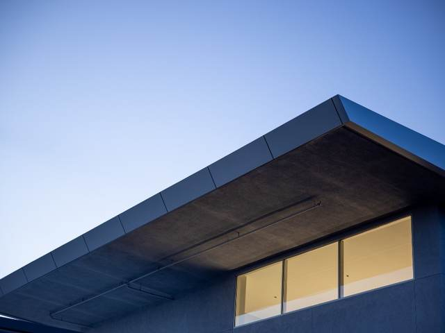
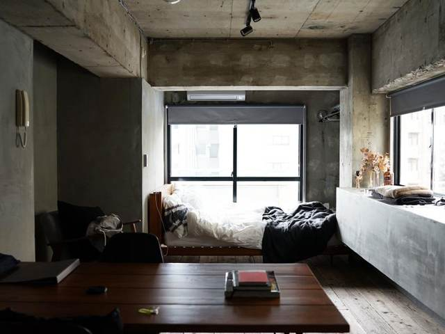
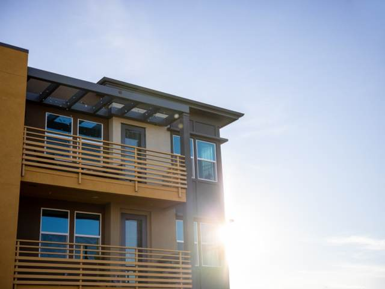
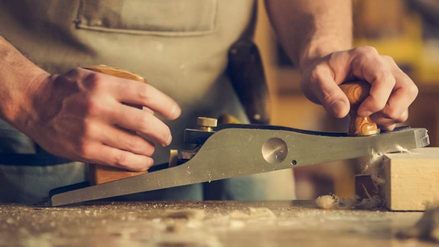
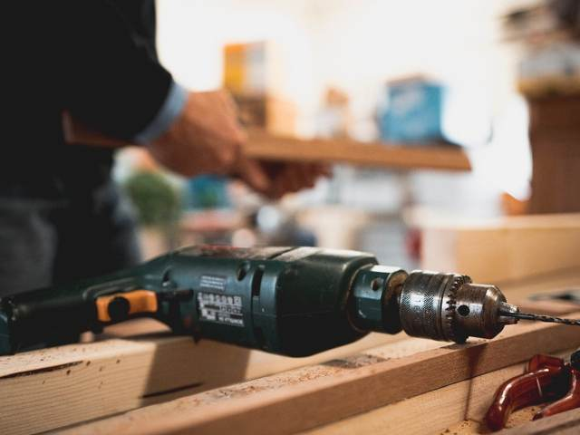

SINCE 1977 埼玉県○○市
新築・リフォーム・外構工事のことなら、地域の杜の木工務店へ。
SERVICE

木造住宅の新築工事
リフォーム工事水まわり・内装・外壁・屋根

外構工事塀・カーポート・ウッドデッキ

耐震診断・耐震補強工事WORKS

GREETING
昭和52年の創業以来、地域の皆様の住まいづくりに携わってまいりました。大工の手仕事を大切に、一棟一棟心を込めて施工しております。家のことでお困りの際は、お気軽にご相談下さい。
代表取締役 杜野 一郎
NEWS
COMPANY
RECRUIT
大工見習い募集中。未経験者歓迎。やる気のある方、まずはお電話下さい。
お問い合わせへCONTACT
048-000-0000
FAX 048-000-0001 ／ メール info@example.com
受付時間 8:00〜18:00（日曜・祝日休み）
© MORINOKI KOUMUTEN
改修後のイメージ（架空の会社・杜工舎の作例）。本文・会社概要・お知らせ・連絡先は改修前のページと同じです。写真は杜工舎の見本と同じフリー素材です。